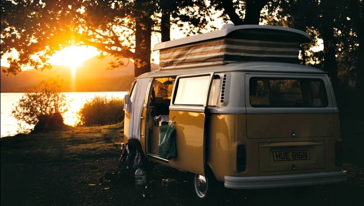
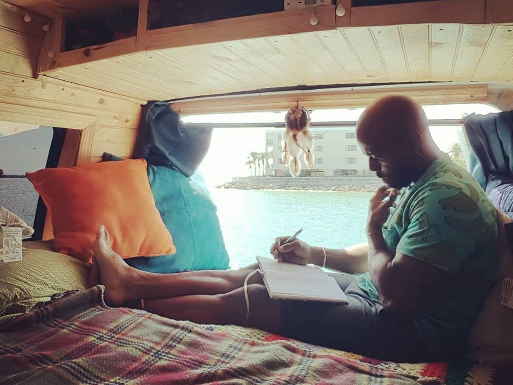

What is vanlife?
Vanlife is the lifestyle characterized by living in a van or other vehicle, either part-time or full-time.
Many vanlifers convert their vehicles into tiny residences by adding amenities like beds, running water, refrigerators, toilets, showers, and cooking facilities.

Living out of a vehicle allows the owners to travel at will, pursue their passions, and live an unstructured life of freedom. #Vanlife isn’t a new idea, it’s simply the modern-day iteration of a concept that’s as old as humankind: a nomadic lifestyle. 
#Vanlife has swept the globe over the last few years, taking over social media and prompting outdoor retailer titans to jump on board with their advertising and marketing campaigns. The hashtag has grown to include vehicles like buses and RVs as well as a range of vans, from classic VWs to ultra-posh Sprinter vans.